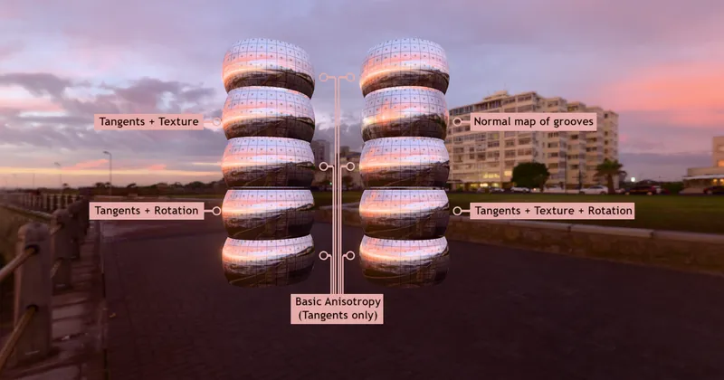

GLTF GLTF Extensions KHR_materials_anisotropy
Anisotropy Rotation Test - RedGPU WebGPU Example
Tests rendering changes based on anisotropy direction rotation.
비등방성 방향 회전에 따른 렌더링 변화를 테스트합니다.

GLTF GLTF Extensions KHR_materials_anisotropy
Tests rendering changes based on anisotropy direction rotation.
비등방성 방향 회전에 따른 렌더링 변화를 테스트합니다.
